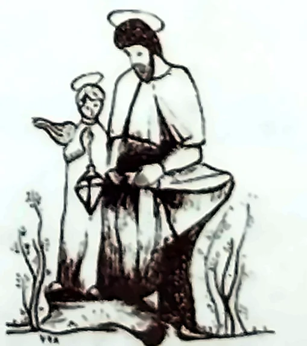
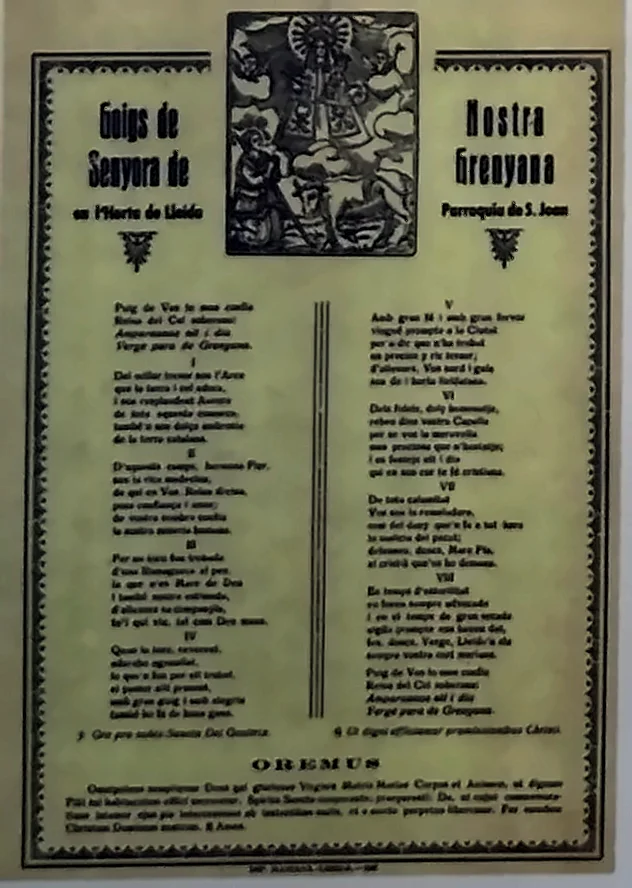
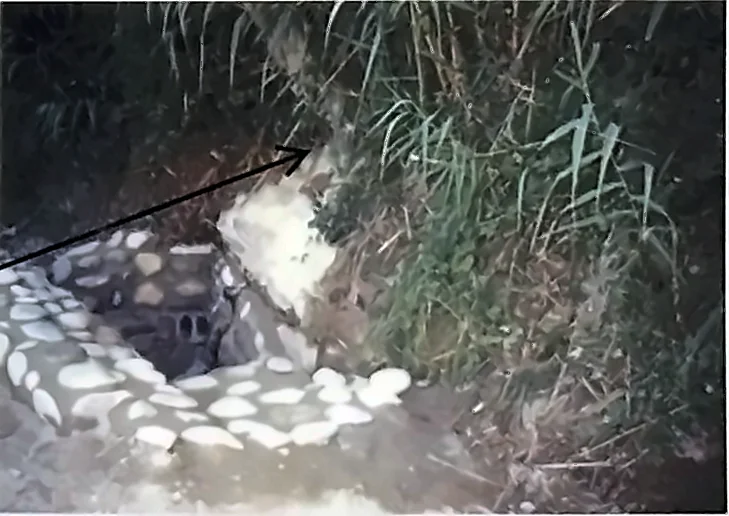
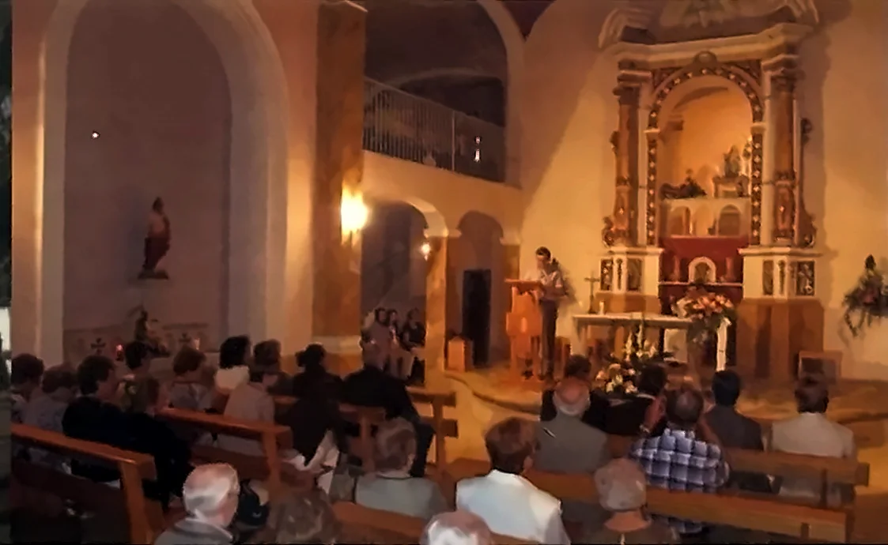
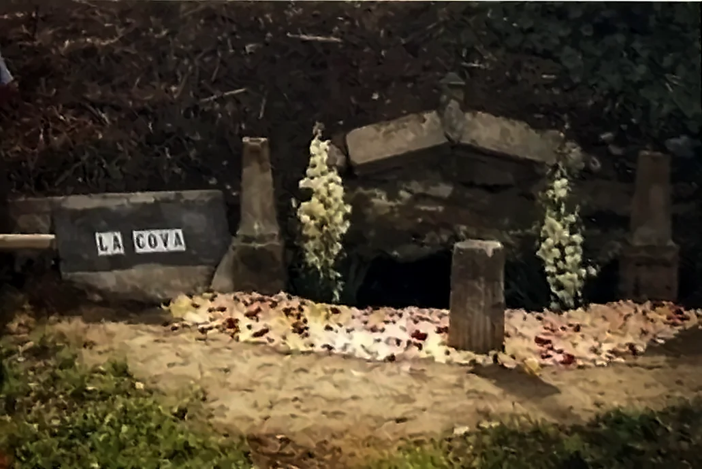
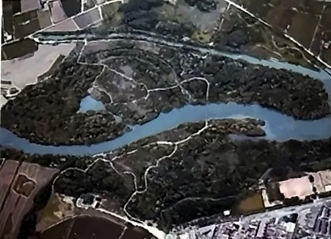
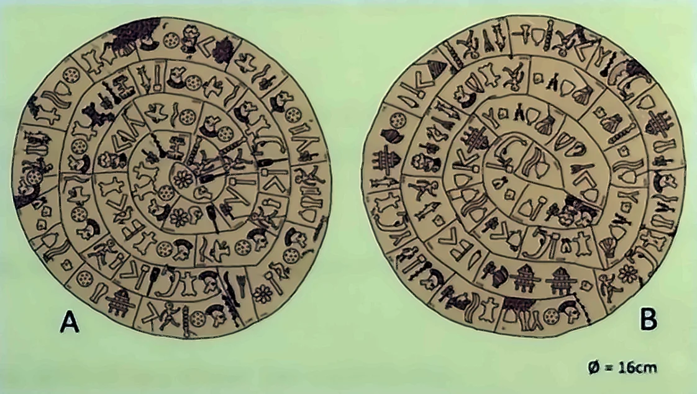
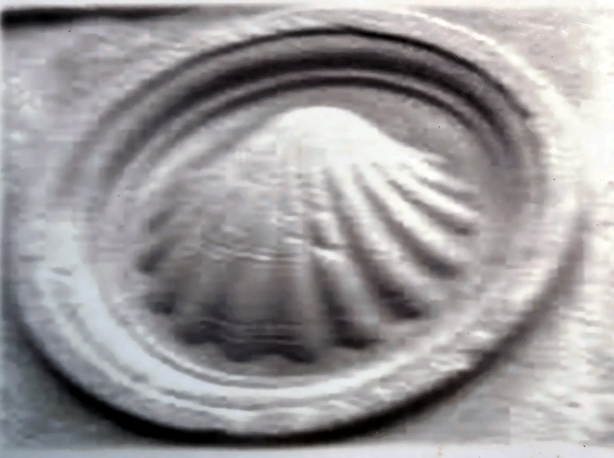

From Grenyana to Butsènit, and the Game of the Goose
The Way of St James

THE WAY OF ST JAMES
from the Grenyana hermitage to the Butsènit hermitage

Walk, you will walk, we are at the heart of the plain; no height or hollow nearby will break our stride.
Màrius Torres

St James's lanterns in Lleida
Legend has it that St James the Apostle, on pilgrimage, reached Lleida and stepped on a bramble; a thorn stuck in his foot and he could not walk. In the dark he could not pull it out, and the angels, hearing his complaints, came down from heaven with little lanterns to give him light. So he could carry on.
Ever since, on the eve of St James (the night of 24 July), there is a procession in which children walk with the saint's statue carrying lanterns and singing this song, adapted from an older one:
St James comes from Galicia,
St James comes from Aragon,
chocolate for the girls
and a good whack of the stick for the boys.


About the route
-Description.-
The route runs from the Grenyana hermitage to the Butsènit hermitage, following the river Segre. In Lleida the way is signposted and passes the Capella del Peu del Romeu on Carrer Major, with its statue of St James pulling the thorn from his foot. If you'd rather not cross the city centre, follow the river channel or the riverside street.
El Xop lies right on the Way of St James. The proof is that we are on a stretch bounded by two hermitages, each with its own Virgin: Grenyana (north of Lleida, upriver) and Butsènit (to the south). The two have a lot in common:
- Both are “found” Virgins, with similar stories, dating from medieval times.
- Both hold an aplec, a gathering with mass, flower offering and a party for neighbours, in the Virgin's honour.
- Both are linked to water, which is why each hermitage has a spring.
- Both are credited with miracles involving water, as their goigs (hymns of praise) record.

Grenyana’s
In times of barrenness
you were our advocate,
and in the time of great drought
you quickly gave us water.
Butsènit’s
Healing countless blind,
those whose sight was harmed,
for you are the singular Queen
named for Butsènit.

-Route.-
Walking this stretch from Grenyana to Butsènit, you find traces of the past: hermitages, mills, canals, irrigation ditches, vegetable gardens… signs of how much work gathered around the water. You also see that river spaces like La Mitjana, the Rufea wetlands, the Butsènit marshes and the Mitjana de les Vaqueres, which look separate, are physically joined by the river. The Segre is a corridor for nature, for the land and for culture.
1.- From El Xop to the Grenyana hermitage (1 km)
On the way you pass a spring, the “Font Pixada”, a good first stop for a drink. Water used to run across the path, and when the mules stepped in it they felt the need to pee (pixar in Catalan): hence the name. An iron marker set into the spring shows how high the river rose in the 1982 flood.
There is mass at the hermitage every Sunday at 11, which is when you can see inside the church; on other days you can ask for the key. Below the path is a lovely spot to rest, with the Virgin's cave and her spring (the water is drinkable).




2.- From El Xop to the Butsènit hermitage, through Lleida (15 km)
La Mitjana park Lleida is 3 km away, and you can walk there through La Mitjana municipal park. On the city's doorstep, it has more than 90 hectares of riverside woodland, wet meadows and water, with signposted trails and places to watch and enjoy nature, most of them accessible to everyone. The name comes from the river's mitjanes, islands that form where a mature river splits into channels in its lower course, slows down and drops sediment; riverside plants soon take them over.


Cervià mill and the Fontanet channel On the Camí de Grenyana, by the wells of Sant Miquel, stands the Cervià mill beside the Fontanet channel. The irrigation channels date from Muslim times; Fontanet watered, and still waters, the farmland on the Segre's left bank. It was essential to the growth of the Lleida area, and came with the resettling of these lands.

The mill had two buildings: the upper mill, with several uses, and the lower one, a flour mill. They also served as a fulling mill (for treating wool), for making pottery glazes and, lastly, for generating electricity. They were leased and passed from hand to hand until the Reapers' War (mid-17th century), after which the flour mill was restored. Today it is in very poor condition, but the setting is beautiful, with the striking waterfall that once turned the wheel. Outside are valuable carved reliefs, and inside a scallop shell carved at the foot of a column.

Lleida A city on the Segre with a rich cultural heritage, one of the oldest in Catalonia, halfway between the sea and the mountains. Its monuments reflect the cultures that passed through: from Roman remains to recent buildings like the Palau de la Diputació and several Modernista houses. The old cathedral, the Seu Vella, is its best-loved landmark.


Rufea wetlands Wetlands of ecological and social value near the Butsènit hermitage. They formed after heavy gravel extraction up to the 1980s: the pits filled with water, since the water table is very shallow, and riverside woodland quickly moved in.
Butsènit hermitage The Butsènit hermitage dates back to the 12th century; the present building is 15th-century, rebuilt after the Reapers' War (the plaque on the hermitage says the 18th century). It recently got its 12th-century bells back. The Virgin, healer of sight, cures by placing a tiny stone (a “tear of St Lucy”) in the eye.


- Hen: “De coc a coc i tiro un altre cop” (hen to hen, and roll again). Move to the next hen and roll again.
- 6 · 12: “De canal a braçal hi vaig d'un salt” (canal to channel in one jump). Move from 6 to 12, or 12 to 6.
- 19: “El Xop, casa de natura, el teu camí atura” (El Xop, house of nature, stops your way). Miss 3 turns.
- 26: “Amb bona pluja, puja” (with good rain, go up). Go to square 53.
- 31: “Al pou profund, espera la llum” (in the deep well, wait for the light). Stay until another player lands here.
- 52: “Pels camins de l'Horta hi faig una volta” (I take a stroll along the Horta lanes). Miss 3 turns.
- 53: “Pedra, tot i ser petita, va malmetre la collita” (hail, small as it is, ruined the harvest). Go back to square 26.
- 57: “L'arbre sense vida et fa començar altre cop la partida” (the lifeless tree sends you back to the start). Start again.
“Game of
the Goose”
–“A there-and-back guide to the Way of St James.” This well-known, much-loved board game ties the Way of St James to the Way of the Geese, or the Way of the Stars –

“A there-and-back guide to the Way of St James.” This well-known, much-loved board game ties the Way of St James to the Way of the Geese, or the Way of the Stars.
On the oldest boards, at the start of the game, there is a minstrel, a gnome, a magician, an astrologer, or a figure throwing dice or herding a small flock of geese. This figure is the Master Initiator, ready to guide us along the way.
For the uninitiated it was a game; for the initiated, a guide to the Way: an unwritten guide to the pilgrim route tied to the Knights Templar. The Templars were monks and soldiers who shared hidden messages with the guild of Companion Builders, the men who raised the cathedrals and carved the symbols into them. That solved the problems of language, of guidance and of signs to mark the places.

There was no real board: it was drawn on any surface, a slate or the ground. Marks carved on churches were the signs for the places on the board. Since Templars were forbidden to play dice, for them the Game of the Goose was not a game but a coded map of the Way, memorised so as not to forget it. The game was the road, and the geese were safe places where the order's knights could shelter, where “certain knowledge” was kept safe. Other squares, like the well, the labyrinth or the dice, were places that were not safe for the order.
Where the Game of the Goose came from
- The Game of the Goose may be an inverted projection of the Phaistos Disc: a clay disc about 16 cm across with spirals on both faces divided into 30 and 31 cells, found in 1908 at the palace of Phaistos in Crete and dated to 1700–1580 BC.
- Other theories credit the Templars, who in idle hours in Jerusalem used nautilus shells. These shells have 63 chambers, the same number as the squares in the game.

- Some theories say the pilgrim route runs between two parallels, 42° 30′ and 42° 50′, that follow lines of stars in the Milky Way. It was an ancient path of initiation leading to the Sea of the Dead: the Way of the Stars. A civilisation with deep knowledge of astronomy and geography built dolmens and petroglyphs and left mysterious signs, later copied onto churches by the Way's stonemasons and scribes. The Milky Way stretches across Europe, like the Way of St James, so wherever you start, if you follow the sky you are heading for Compostela.
- The game was invented before the 11th century, but it truly flourished under Philip II, when Madrid was the centre of the empire “on which the sun never set”. It came to outshine chess and dice at the courts of Europe.
Why the goose?
Wild geese follow fixed seasonal migration routes, the so-called ways of the geese. These routes match the Way of St James, the Way of the Stars.
Geese were seen as the model of Sacred Wisdom: holy guides sent to advise people. The goose is a mythical creature, a messenger from the sky, and on the Way of the Stars it became a sign of initiation tied to the divine and to protection; Romans, Egyptians and Celts all believed so.
Geese are usually white (a sign of purity). They walk, swim and fly, and they migrate towards the sun: so they stand for earth, water and air at once, the three elements.
Geese once guarded houses, raising the alarm at intruders with their racket.
They turn up again and again in the folklore and tales of East and West.
In Russia there was a tradition of shamans who turned into geese, watched over by a grandmother who stood for the Lady of the Universe.
A Bedouin tribe marked its flock with a duck's foot to protect it from desert reptiles.
Barcelona Cathedral always keeps geese, the geese of St Eulalia, who wander the cloister and are said to sound the alarm if a thief tries to desecrate the church. (The book counts 11; tradition says 13.)
On many church stones, medieval masons carved three lines, one upright and two slanting: a simple goose's foot. On the Crucifix of the church at Puente la Reina, the figure rests on a goose's foot.
Along the Way there are many place names with the goose in them: the river Oca, the Montes de Oca, the Oca valley, Nanclares de la Oca, Villafranca Montes de Oca, and the village of El Ganso (“the goose”).

“The Way of St James as a path of initiation for travellers seeking Wisdom and inner perfection. The routes are full of symbolic marks from older legends and myths, sometimes expressed in secret, that only those able to read them can recognise. Among these signs, one stands above the rest: the goose.”
The Game of the Goose board
The board is a coded map of the Way of St James, there and back. The outward journey is the first 32 squares, the 32 stages of the Way. The symbols were familiar and easy to copy, which got round the problem of language.
Numbers matter in the Game of the Goose, especially 9. The board has 64 squares, not 63 as people say: 63 = 6 + 3 = 9; square 63 is the Gate of the Goose Garden, and the garden itself carries no number, though it would be 64, because as the mystical centre it is never numbered. 6 + 4 = 10, 1 + 0 = 1: Unity, the One, the Invisible.

7 times 9 is 63, and every square numbered 9 or a multiple of 9 shows a goose.
The Game of the Goose and the lantern procession

In Lleida, every 24 July, the eve of St James, the St James procession is held. It rests on an old legend handed down by word of mouth from parents to children, recalling the birth of Christianity in these western lands.
Legend has it that St James the Apostle, on pilgrimage, reached Lleida and stepped on a bramble; a thorn stuck in his foot and he could not walk. In the dark he could not pull it out, and the angels, hearing his complaints, came down from heaven with little lanterns to give him light. So he could carry on.
The most curious thing about the procession, even today, is the lanterns. Without anyone asking why, the moon and the sun stand out, linking them to the way of the stars; and there is a duck lantern, which links it to the goose. It is intriguing, because Lleida is not on the French Way, where the goose symbols are found.

This tradition would seem to confirm the theory that the Way of St James, the Way of the Stars and the Way of the Geese are one and the same road.

Turn the pages with the arrows, by swiping, or by tapping the edge of the page.
Pages
- 1Cover
- 2St James'S Lanterns In Lleida
- 3About The Route
- 4The Font Pixada spring among the grass
- 5Aerial view of the river Segre and La Mitjana park
- 6Aerial view of Lleida’s old cathedral, the Seu Vella
- 7The Horta game board, with photos of the Lleida farmland and El Xop’s rooster in the middle
- 8“game Of The Goose”
- 9A stone with the goose-foot mason’s mark
- 10Where The Game Of The Goose Came From
- 11Why The Goose?
- 12A handwritten sketchbook page in Spanish, with a watercolour goose
- 13The Game Of The Goose Board
- 14The Game Of The Goose And The Lantern Procession
- 15A pilgrim’s scallop shell carved in stone